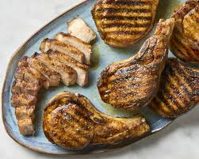

Grilled Porkchops
Test
Home

Making grilled porkchops is a delecious and quick way to get a meal ready.
To make grilled porkchops you will need the following:
- 1 8oz Porkchop
- Salt and Pepper
- Butter
- A grill
To grill your chops, just follow the easy steps below:
- Start your charcoal about 30 minutes before you ready to grill, or light your gas gril about 5 minutes before
- Lightly season your porkchops on both sides with salt and pepper
- Place your porkchops on the grill, flipping about every 2 minutes.
- Continue cooking until porkchops are fully cooked, 145 degrees internal
- Remove porkchops and let rest, after 5 minutes you may serve